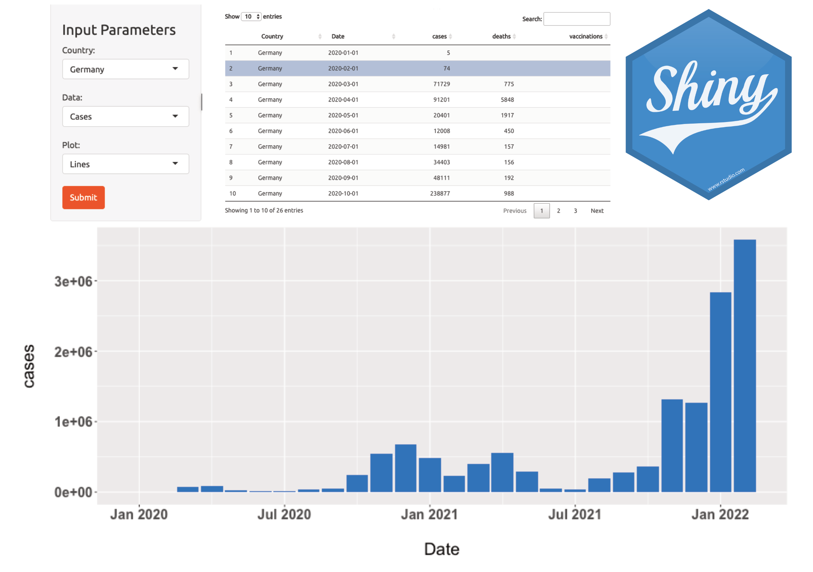

Seit meinem Bachelorstudium habe ich mich intensiv mit den Themen Datenanlyse und Datenauswertung beschäftigt.
Der Masterstudiengang gab mir die Gelegenheit mein Wissen in SQL, Python, R und GIS zu vertiefen.
Das Portfolio zeigt eine Auswahl interessanter Projekte, die ich bereits umgesetzt habe.

Mit "Shiny Web Applications" kann jegliche Datenauswertung anwenderfreundlich gestaltet und visualisiert werden.

Auswertung von Covid-19 Daten in SQL und Dplyr,
"a grammar of data manipulation".
Die perfekten Tools zur handhabung großer Datenmengen.
In diesem Projekt wird untersucht, welche Variablen den kommerziellen Erfolg eines Kinofilmes beeinflussen.
Eine Auswahl verschiedener Projekte zum Thema Umwelt und Wasser, in denen individualisierte Graphen zur Ergebnisdarstellung verwendet werden.